COMPARTIR ARCHIVOS CON SAMBA
Bienvenido a nuestra guía sobre cómo compartir archivos entre máquinas Linux y Windows utilizando Samba en VirtualBox
En esta guía, exploraremos cómo configurar y utilizar Samba en una configuración de VirtualBox para compartir archivos entre una máquina Linux y una máquina Windows.
Utilizaremos VirtualBox, un popular software de virtualización que nos permite crear máquinas virtuales independientes con diferentes sistemas operativos, lo que brinda
un entorno perfecto para aprender y experimentar con la configuración de redes y compartición de archivos.
Ya sea que estés buscando compartir archivos entre diferentes sistemas operativos para un proyecto colaborativo o simplemente desees aprender sobre la configuración de redes
en entornos virtualizados, esta guía te proporcionará los conocimientos y las habilidades necesarias para lograrlo con éxito.
Se requiere la descarga de VirtualBox desde el enlace provisto a continuación aquí. Posteriormente, se debe seleccionar la opción de
descarga correspondiente al sistema operativo utilizado, específicamente para Windows. Esto implica hacer clic en el botón de descarga destacado en color azul.
INSTALACIÓN ISOS
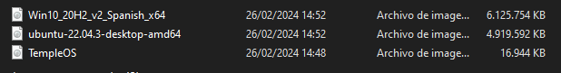
1. Para la creación de las máquinas virtuales, primeramente debemos de descargar las ISOS de WINDOWS y de LINUX, para posteriormente añadirlas a las máquinas
virtuales
MÁQUINA LINUX
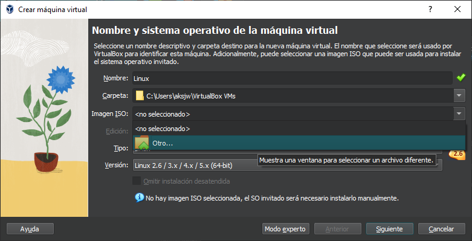
1. Se procederá a la incorporación de una nueva máquina virtual, en la cual se deberá seleccionar la opción correspondiente a "Imagen ISO". Una vez dentro de esta opción, se procederá a elegir
la alternativa "otro..." para posteriormente seleccionar la imagen correspondiente a la distribución de Ubuntu.
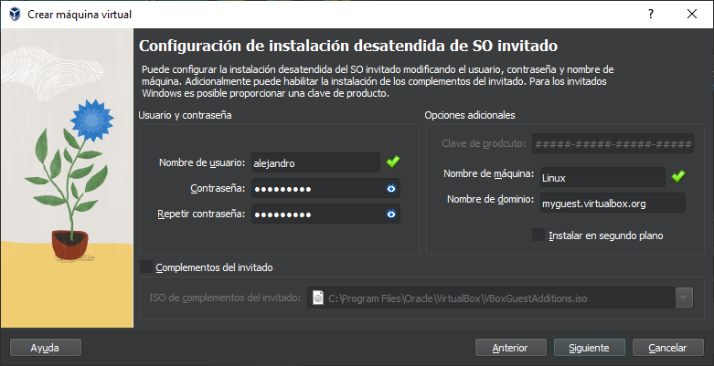
2. Tras la adición exitosa de la máquina virtual, se solicitará un cambio de credenciales de usuario, comprendiendo tanto el nombre de usuario como la contraseña. Se recomienda optar por una
combinación breve y de fácil recordación para garantizar la accesibilidad y el manejo eficiente del sistema.
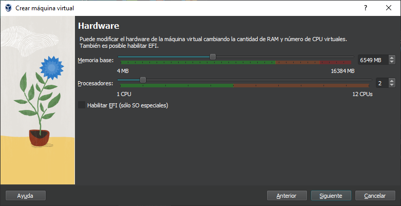
3. Será necesario configurar los parámetros de memoria base, cantidad de procesadores y tamaño de disco por defecto con el fin de prevenir posibles inconvenientes operativos.
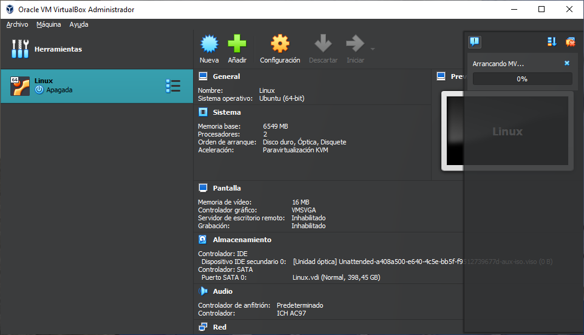
4. Sin tocar nada la máquina virtual comenzará a arrancarse, en este paso no tocaremos nada
MÁQUINA WINDOWS
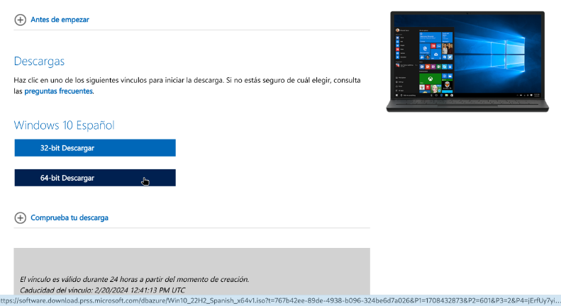
1. Se procederá a la descarga de la imagen ISO proporcionada anteriormente, seguido de un clic en la versión de 64 bits (x64) para dar inicio al proceso de descarga.
2. La creación de la máquina virtual sigue un procedimiento similar al utilizado para sistemas Linux, requiriendo la observancia rigurosa de cada paso sin omitir ninguno. Una vez que la máquina
virtual haya sido creada satisfactoriamente, iniciará el proceso de arranque. No obstante, por el momento, se procederá a cerrar la máquina virtual para continuar con los pasos subsiguientes.
CONFIGURACIÓN RED NAT
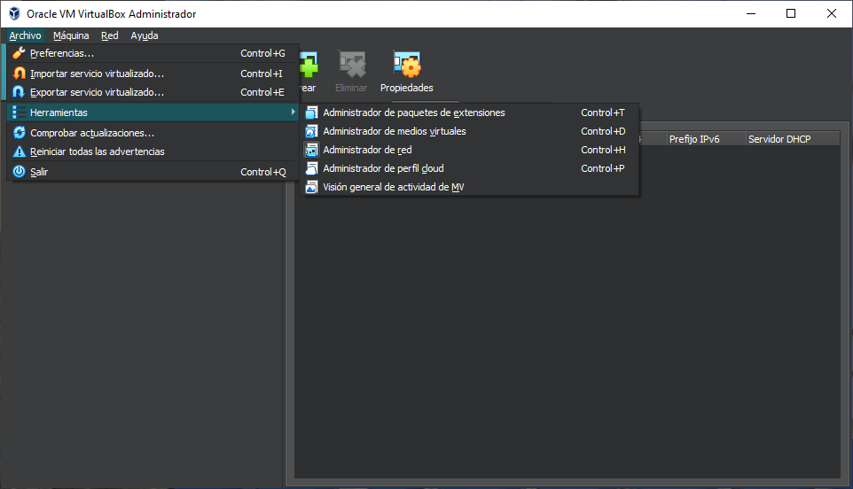
1. En VirtualBox, se procederá a hacer clic derecho en el menú de "Archivos" > "Herramientas". Luego, en el desplegable que aparece, se posicionarán el cursor sobre la opción "Herramientas" y se seleccionará
"Administrador de Red" en la nueva ventana emergente.
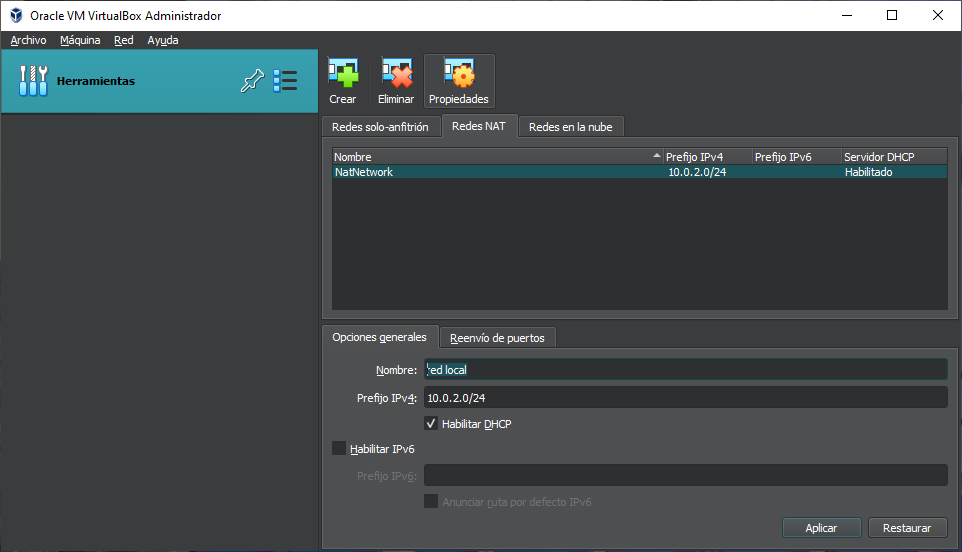
2. Nos dirigiremos a la configuración de red y seleccionaremos la opción "Red NAT". Posteriormente, cambiaremos el nombre de esta configuración a "Red Local".
LINUX
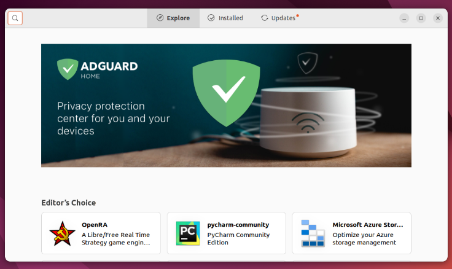
1. Dentro de la interfaz, ubicaremos una serie de aplicaciones en la barra lateral. Haremos clic en la bolsa naranja identificada como "Ubuntu Software". Una vez abierta esta aplicación, nos dirigiremos
a la esquina superior derecha y seleccionaremos la pestaña "Updates". Acto seguido, pulsaremos sobre el botón verde etiquetado como "Update All" para proceder con la descarga de las actualizaciones disponibles.
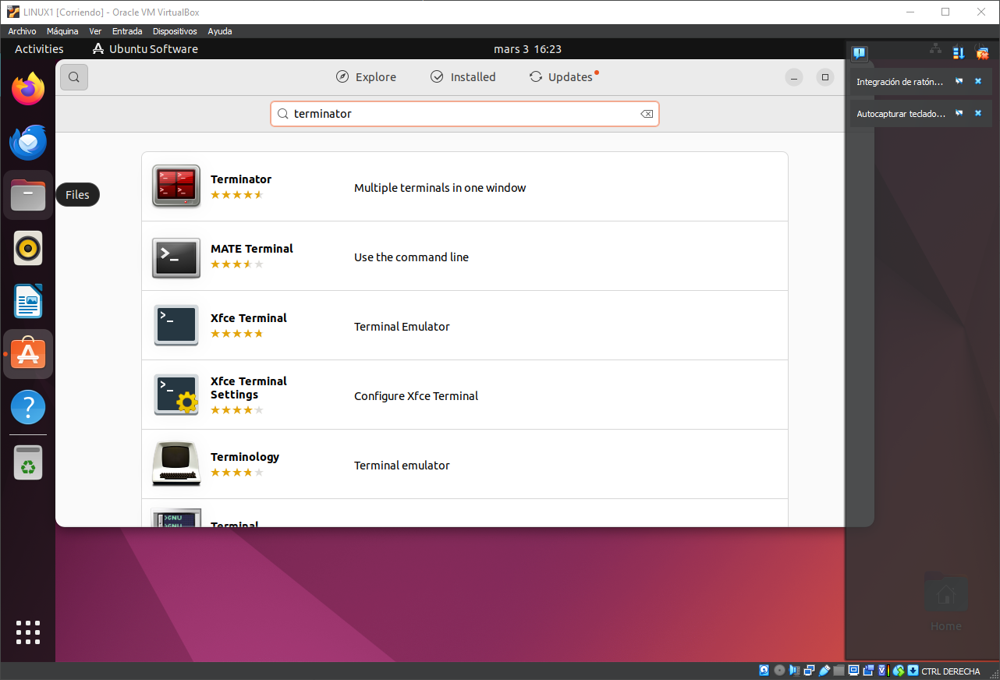
2. Se encontrará un problema al abrir la terminal por defecto en la Máquina Virtual. Para solucionarlo, se buscará y descargará una nueva terminal, en este caso, Terminator, mediante el buscador de software. Después
de instalar Terminator, se podrá cerrar la ventana de Ubuntu Software.
3. Una vez dentro de la terminal, realizaremos los siguientes códigos:
su-> 'Para cambiar a root, introducir contraseña'
apt upgrade-> 'Realizar actualizaciones'
4. Al crear el nuevo usuario, se le solicitará establecer una contraseña. Se sugiere utilizar la misma contraseña que se utilizó al crear la máquina virtual de Linux. Posteriormente, se requerirá completar varios huecos;
en este caso, se pueden dejar en blanco o llenarlos según prefiera el usuario, es igual a la hora de realizar la máquina, realizaremos el siguiente código:
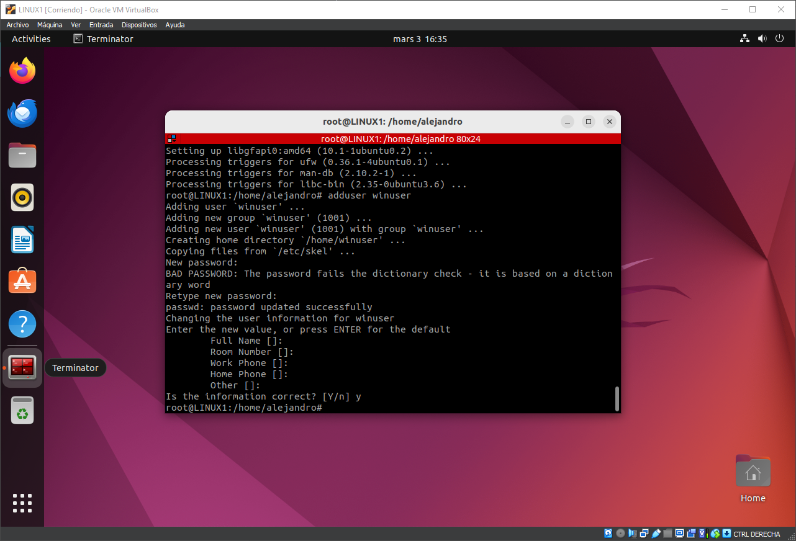
apt install samba-> 'Para instalar Samba'
adduser winuser-> 'Para agregar el nuevo usuario'
5. A continuación, iniciaremos el proceso de creación de una carpeta compartida en la cual estableceremos permisos específicos. Para ello, emplearemos el comando "chmod 777", que otorgará permisos de lectura, escritura y ejecución
a todos los usuarios. Este nivel de permisos permitirá un acceso completo a la carpeta compartida, garantizando así una colaboración efectiva y una gestión flexible de los archivos contenidos en ella.
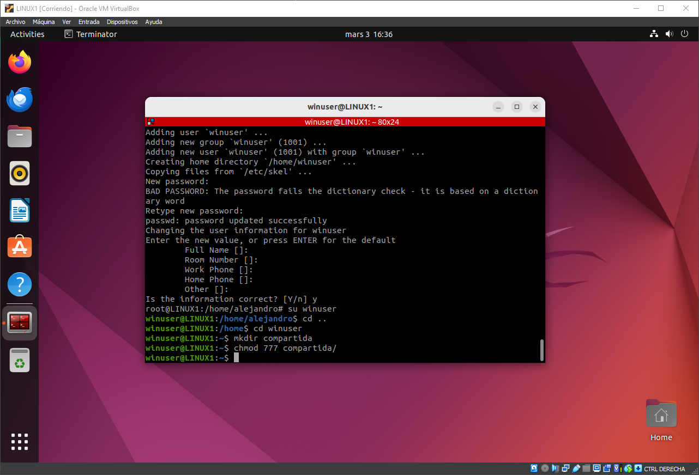
su winuser-> 'Para iniciar sesión como winuser'
cd ..-> 'Para retroceder a la carpeta inical'
cd winuser-> 'Para acceder a la carpeta de usuario'
mkdir compartida-> 'Para crear la nueva carpeta'
chmod 777 compartida-> 'Para darle permisos a la carpeta'
6. Emplearemos el editor nano, una herramienta nativa en entornos Linux, para configurar la carpeta compartida. Tras ejecutar el comando, el archivo se abrirá en la terminal. Navegaremos hasta el final del archivo y activaremos el modo
de inserción presionando la tecla "insert" en nuestro teclado. A continuación, introduciremos el siguiente contenido en el archivo, que se deberá de ver así.
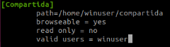
sudo nano /etc/samba/smb.conf-> 'Para editar el archivo con nano'
[Compartida]
path = /home/winuser/compartida
browseable = yes
read only = no
valid users = winuser
7. Cuando hayamos concluido la edición del archivo y retomemos la terminal, procederemos a ingresar el siguiente comando con el propósito de agregar la cuenta de usuario denominada "winuser" al sistema de Samba, permitiéndole así acceder
a los recursos compartidos de manera adecuada y segura.
smbpasswd -a winuser-> 'Para agregar a Samba'
8. Dentro de la carpeta compartida, logueados como winuser crearemos un archivo.
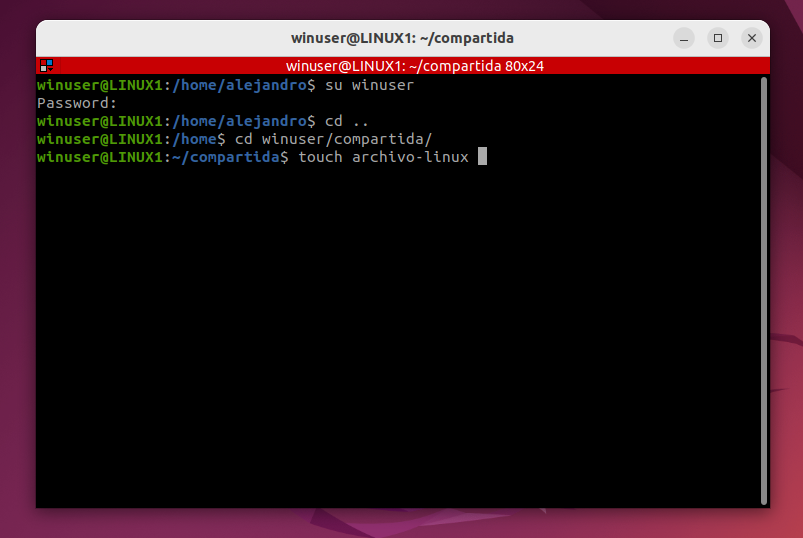
su winuser-> 'Para entrar como winuser'
cd ..->
cd winuser/compartida/
touch archivo-linux->
9. Para asegurar la correcta aplicación de todos los cambios realizados, reiniciaremos los servicios de Samba desde la cuenta de superusuario (root). Esto garantizará que cualquier modificación realizada se active y esté plenamente funcional.
10. Finalmente, para verificar la conexión entre la máquina virtual y Windows, procederemos a comprobar la dirección IP asignada. En mi caso, esta dirección es 10.0.2.15. Este paso es crucial para asegurar la conectividad entre los sistemas y
confirmar que la configuración de red se haya realizado correctamente.
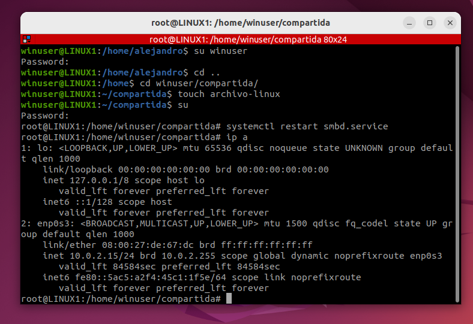
ip a-> 'Mostrar dirección ip'
WINDOWS
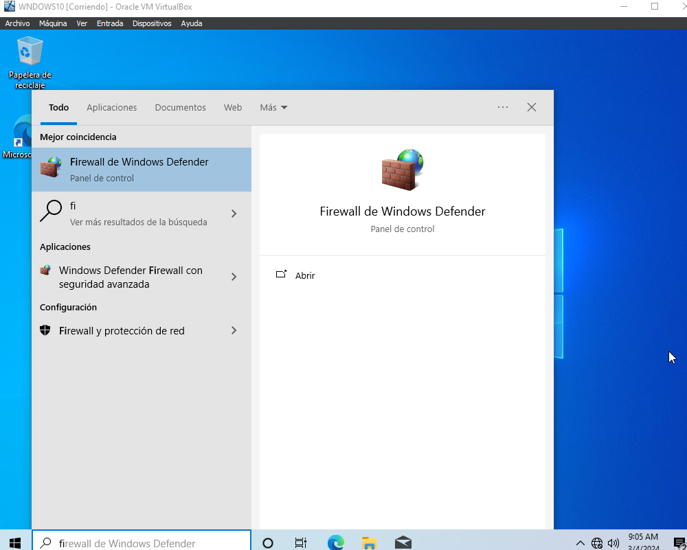
1. Una vez abierto, pulsaremos la tecla windows y buscaremos firewall.

2. En la parte lateral, encontraremos la configuración avanzada.

3. En la barra lateral, localizaremos la opción denominada "Reglas de Entrada" y haremos clic sobre ella. Se desplegará un listado en el que habrá que habilitar todas las opciones relacionadas con "Archivos e Impresoras Compartidos". Posteriormente,
repetiremos el mismo procedimiento con las "Reglas de Salida". Este ajuste garantizará la correcta comunicación entre los sistemas y permitirá el intercambio de archivos e impresoras de manera fluida.
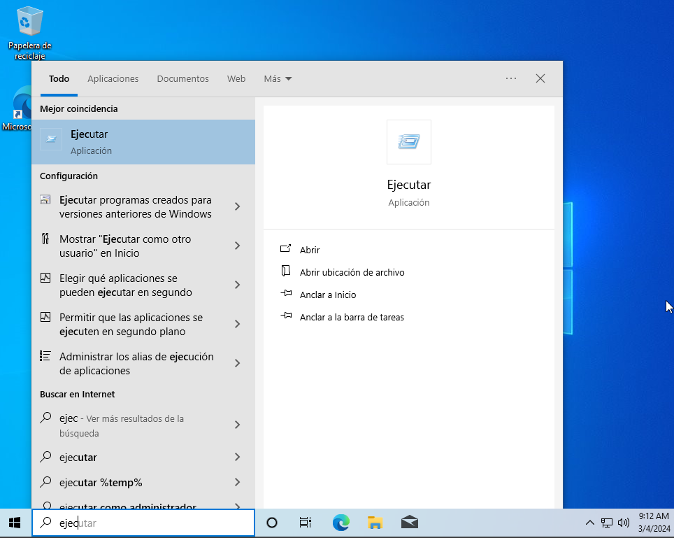
4. Para acceder a la carpeta compartida, abriremos el programa "Ejecutar" y escribiremos la siguiente dirección: "//iplinux/compartida". Luego, pulsaremos en "Aceptar" para confirmar. Esto permitirá la visualización y acceso a la carpeta compartida desde
el sistema operativo Windows.
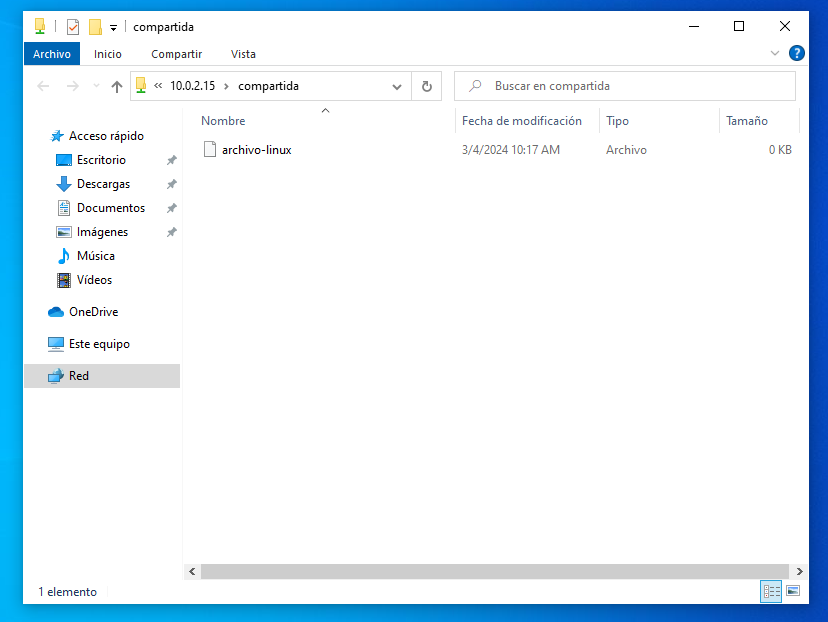
5. Al ejecutar este proceso, se abrirá la carpeta compartida creada en Ubuntu, lo que posibilitará el acceso a la información desde ambos equipos. Esto facilitará la colaboración y el intercambio de archivos entre los sistemas operativos.